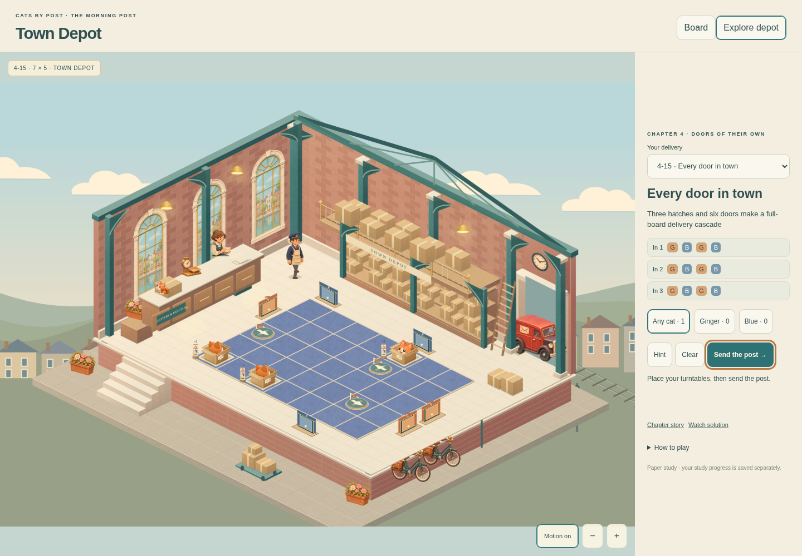
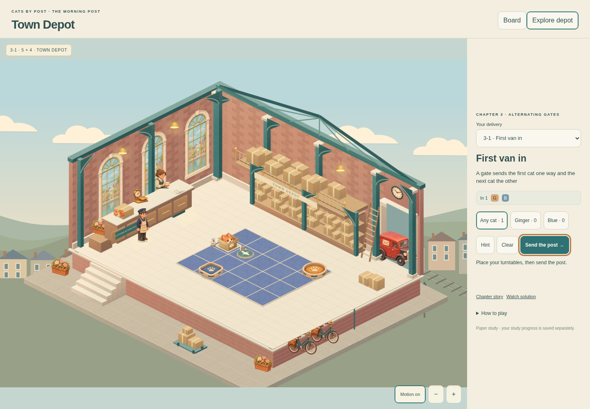
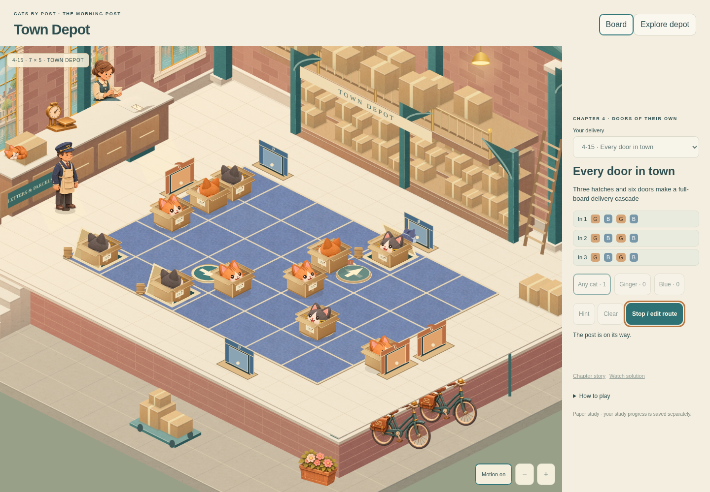
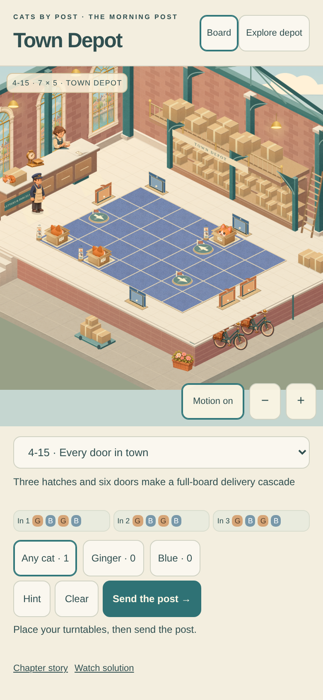
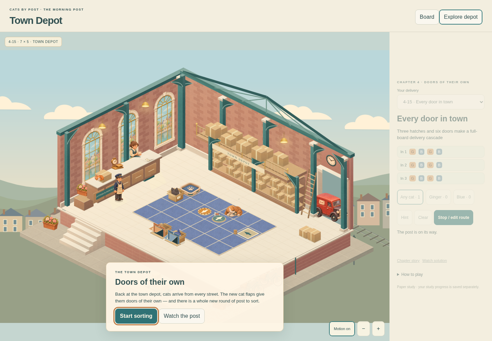
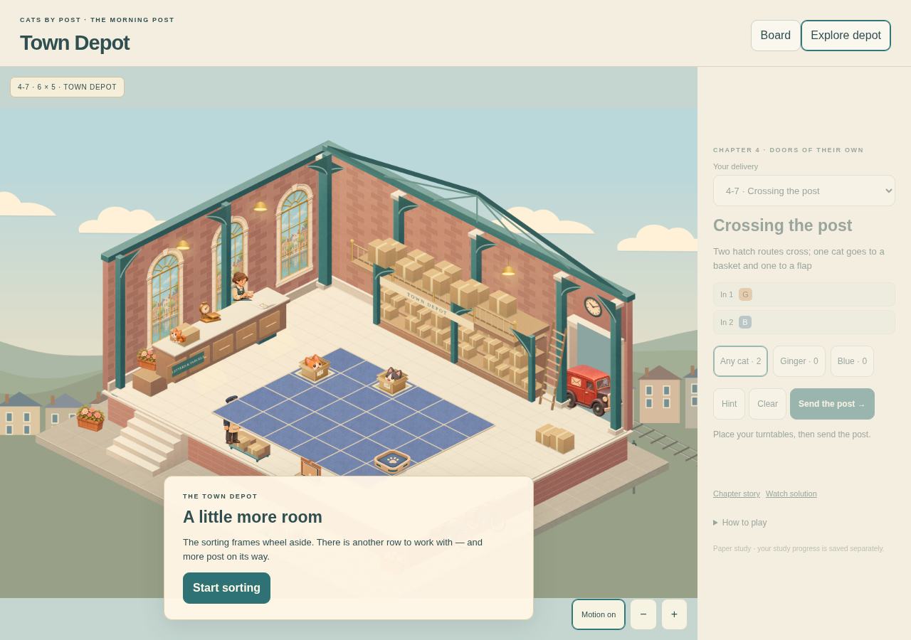
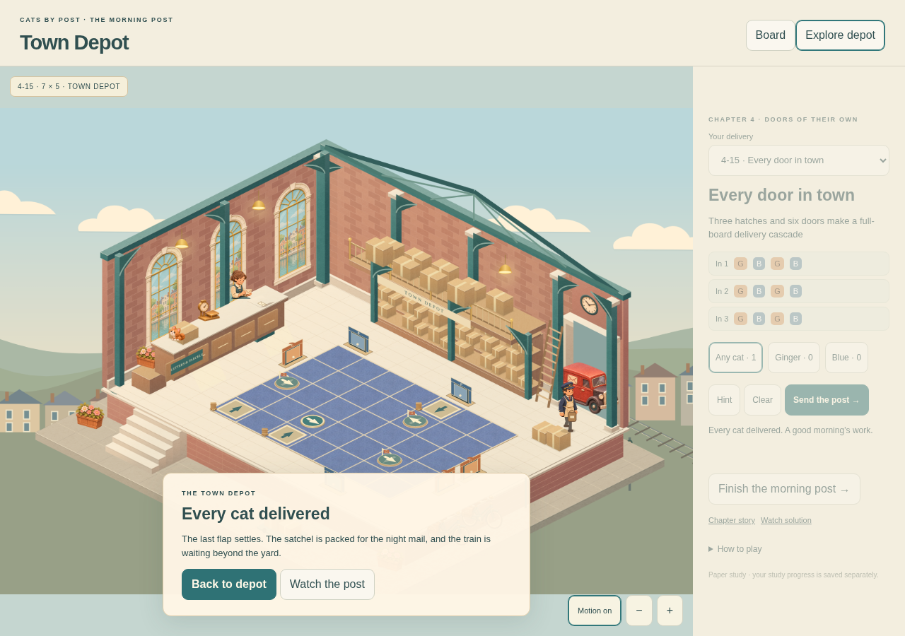
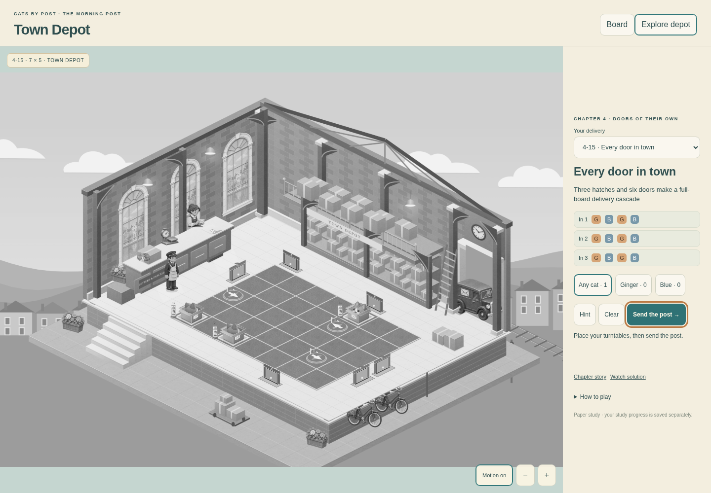

CATS BY POST · TOWN DEPOT
The morning post
The selected Goods Yard Lanterns composition, rebuilt as a playable paper room. All 25 original deliveries, four board sizes, gates, flaps and chapter scenes are available.
Play the first delivery · Open the maximum board · Watch the chapter
This local review keeps its own saves. The approved Office, canonical game, other rooms and native code are untouched. Publication and final integration remain separate.
The full sorting floor · 7 × 5

The first morning · 5 × 4

The post on its way

Phone planning

Chapter scenes



Inspect four-direction door contacts
Board clarity

Handover and verification · Independent review and corrections · Shared integration proposal